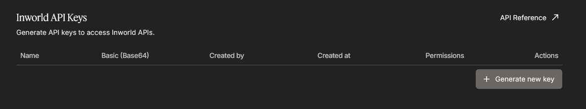
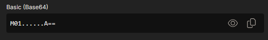

Dubbing / Text-to-Speech
ElevenLabs TTS 使用上文所述的同一个 ElevenLabs 密钥。如果密钥的权限受限，则必须包含 Text to Speech: Access 权限。若要使用 ElevenLabs 声音克隆选项（Instant Voice Cloning，需要付费 ElevenLabs 套餐），该密钥还需具备 Voices 的写入权限，以便 SubVox Pro 创建、查找和删除其克隆声音。Gemini TTS 使用与翻译相同的 Gemini 密钥（参见 Google (Gemini)）：无需 OAuth，也无需结算账号，这与下文 Google Cloud Text-to-Speech 的 Gemini 音色不同。OpenAI TTS 使用与翻译相同的 OpenAI 密钥（参见 OpenAI）。InWorld 的专用配置步骤如下。
InWorld AI
用途：为翻译后的音轨生成配音音频（TTS）。
1 访问 Inworld Studio（https://studio.inworld.ai）并创建账号。

2 在工作区中，从左侧边栏打开 API Keys。

3 点击 Generate new key。

4 为密钥设置一个易于识别的显示名称。除非特别需要仅用于实时服务的密钥，否则请选择 Standard，并保留 Inworld TTS 工作流所需的权限。

5 复制 Basic (Base64) 密钥值。

该密钥也会显示在 API Keys 列表中，如有需要，稍后可在此处再次复制。

6 将其粘贴到 SubVox Pro 中（Settings ▸ InWorld）。
免费套餐提供约 70 分钟的一次性 TTS 配额，并包含商业许可证。可以先在 TTS Playground 中试听音色。入门文档： https://docs.inworld.ai/docs/tts-api/getting-started/
Google Cloud Text-to-Speech
用途：为翻译后的音轨生成配音音频（TTS）。两个音色系列共享一个连接：通过 Cloud Text-to-Speech API 使用的常规音色（Standard、WaveNet、Neural2、Chirp/Chirp3-HD），以及 Gemini 音色（预置名称如 Leda、Achird、Aoede）。后者支持多语言，并接受自由格式的风格提示词，通过独立的 Vertex AI API 运行。
与其他提供商不同，Google Cloud TTS 使用 OAuth 登录，而非 API 密钥。原因在于：Gemini
音色通过 Vertex AI 运行，而该服务受 IAM 权限控制（aiplatform.endpoints.predict）；API 密钥不包含
IAM 权限，但登录的 Google 账号具有这些权限（前提是该账号是项目所有者或具有编辑权限）。一次登录即可使用这两个音色系列。
- 访问 https://console.cloud.google.com，打开 Google Cloud Console，并创建（或选择）一个项目。新账号可获得 300 美元试用额度（90 天）；即使使用免费层级，也需要结算账号。
- 在 APIs & Services ▸ Library 中，启用 Cloud Text-to-Speech API（常规音色）；若需使用
Gemini 音色，还需启用 Vertex AI API（
aiplatform.googleapis.com，不是旧版“AI Platform”ml.googleapis.com）。如果只需常规音色，可跳过 Vertex AI。 - APIs & Services ▸ OAuth consent screen：将 User type / Audience 设置为 External（Internal
会阻止个人 Gmail 账号登录，并返回
403: org_internal），然后在 Test users 下添加自己的 Google 账号。 - APIs & Services ▸ Credentials ▸ Create credentials ▸ OAuth client ID，应用类型选择 Desktop
app。复制 Client ID 和 Client secret。（通过
http://127.0.0.1进行回环登录需要 Desktop 客户端，与 Google Sheets 集成相同。） - 在 SubVox Pro 中，打开 Text-to-Speech 选项卡，选择 Google Cloud，粘贴 Client ID 和 Client secret，然后点击 Connect… 并在浏览器中登录。遇到 “app not verified” 警告（Testing 模式下的正常现象）时，选择 Continue。（计费和配额所用的项目根据客户端 ID 确定，因此无需输入其他内容。）凭据和刷新令牌保存在本机（编辑器首选项中），绝不会保存在项目中。
然后选择一种音色。常规音色显示为 Tier Leaf (locale)（例如 Neural2 A (fr-FR)）；Gemini 音色显示为 Name · Gemini，且不受语言筛选器限制（它们可以使用所有受支持的语言）。选中
Gemini 音色后，voice direction 按钮（音色选择器旁边的对话气泡图标）将变为可用状态。输入类似 “非常悲伤，几乎精神崩溃” 的语气描述后，每条台词都会使用这段描述作为 Gemini 风格提示词。
计费说明：常规音色使用 Cloud Text-to-Speech 每月免费配额（Neural2/WaveNet 约 100 万字符，Standard 为 400 万字符）；Gemini 和 Chirp 音色通过 Vertex AI 计费，费率不同。请设置预算提醒。TTS 定价：https://cloud.google.com/text-to-speech/pricing
Azure AI Speech
用途：为翻译后的音轨生成配音音频（TTS），采用高质量的多语言神经网络音色。使用订阅密钥 + 区域（无需 OAuth）。
在 https://azure.microsoft.com/free 创建 Microsoft Azure 账号。Azure 会要求提供信用卡以验证身份，但 Speech 免费层级（F0）是真正免费的 SKU（通过限制使用量而非计费来控制用量），因此使用 F0 不会从信用卡扣款。
在 Azure Portal（https://portal.azure.com）中，点击 Create a resource，搜索 Speech，并选择由 Microsoft 发布、标题为 Speech 的卡片（带有 Create 按钮，不要选择标有 Subscribe 的第三方 Marketplace 产品）。点击 Create，然后选择订阅和资源组、Region（记住该区域）、名称以及 Pricing tier F0 (free)。点击 Review + create。
正确资源的直达链接：https://portal.azure.com/#create/Microsoft.CognitiveServicesSpeechServices
部署完成后，打开该资源并转到 Keys and Endpoint。复制 KEY 1 并记下 Location/Region（例如
westeurope）。将密钥粘贴到 SubVox Pro 中（Settings ▸ Azure Speech）。然后在 Text-to-Speech 选项卡中，选择 Azure，并从下拉菜单中选择相同的 Region。
密钥和区域必须对应同一个 Speech 资源，否则 Azure 将拒绝请求并返回
401。区域是从下拉菜单中选择的简短标识符（westeurope、eastus等），而非显示名称（“West Europe”）。
免费层级（F0）：每月约 50 万字符的神经网络 TTS 配额，仅供评估使用。Microsoft 仅对付费（S0）资源生成的音频授予商业使用权。在为准备发布的游戏生成配音之前，请先将资源切换为 S0。定价：https://azure.microsoft.com/pricing/details/cognitive-services/speech-services/